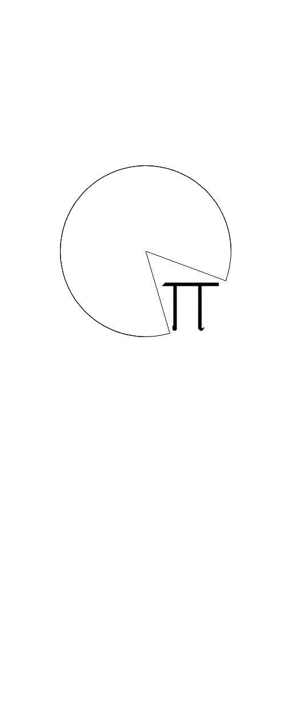

I am Nick Perez, a 4th year computer science student and teaching assistant at Carleton University. I have a love for teaching both math and computer science. My interests include: playing/composing music, health/fitness, modern technological advancements, computer science, math, and cats.
The services I offer are in any grade up to grade 12 math and computer science. I will tutor some computer science courses at the university level as well, these courses primarily include: first and second year discrete math, introductory level data structure/algorithm courses and introductory programming courses. I typically charge $20 an hour and host all of my tutoring sessions in my house in Barrhaven. I will tutor on campus as well at Carleton University but my hours are less flexible there.
link to my 2017 outstanding teaching assistant nomination (see bottom of page 4)
"My experience tutoring with Nick was wonderful. He taught me the fundamentals of coding in Python and new ways on approaching problems." -Omar, December 2016
"In the beginning of the semester I was struggling with grade 12 math and barely passing my tests. However, thanks to Nick taking time out of his day and tutoring me, I was able to improve and I am now getting 80% and above." -Gwen, January 2018
"My son was failing Grade 9 math. In early November, he started spending time with Nick, usually twice a week. By Christmas, his credit was no longer in jeopardy and he had brought home marks of 69, 87 and even a 100% on his tests and quizzes. With Nick's calm and friendly demeanour, my son was able to quickly feel comfortable and begin to believe he could do better, but it was Nick's professional approach to "managing" my son's math learning that really impressed me. I have no doubt in recommending Nick to any and all who can benefit from his tutoring." -Dave, January 2018
"My daughter took a grade 11 computer science course without having taken any previous computer classes. She was overwhelmed and struggling to understand. We found Nick, and hoped with his tutoring our daughter would be able to pass the course and receive the credit. To our amazement our daughter not only passed but had a final mark of 87%. The mark was great but more importantly our daughter discovered she really enjoyed the class. Thank you Nick for your reliability and willingness to accommodate busy schedules." -Karen, January 2017
"I am currently a second year student at Carleton University studying Computer Science. It was difficult for me to learn coding at first due to me not having any experiences previously but Nick tutored me and helped me understand Python very well and I did well on all of the assignments" -Shaiq, January 2018
"We have been very happy with the help that Nick has provided on grade 12 math. He has taken the time to explain the concepts and not just go over the material, but also gave further insight into certain subject matters. He has explained some of the math concepts in a clearer manner than what is being taught at school. This has helped my child do better at school in a short amount of time. Very knowledgeable and patient. Highly recommended." -Jerry, January 2018
email me for any questions and for booking tutoring sessions: